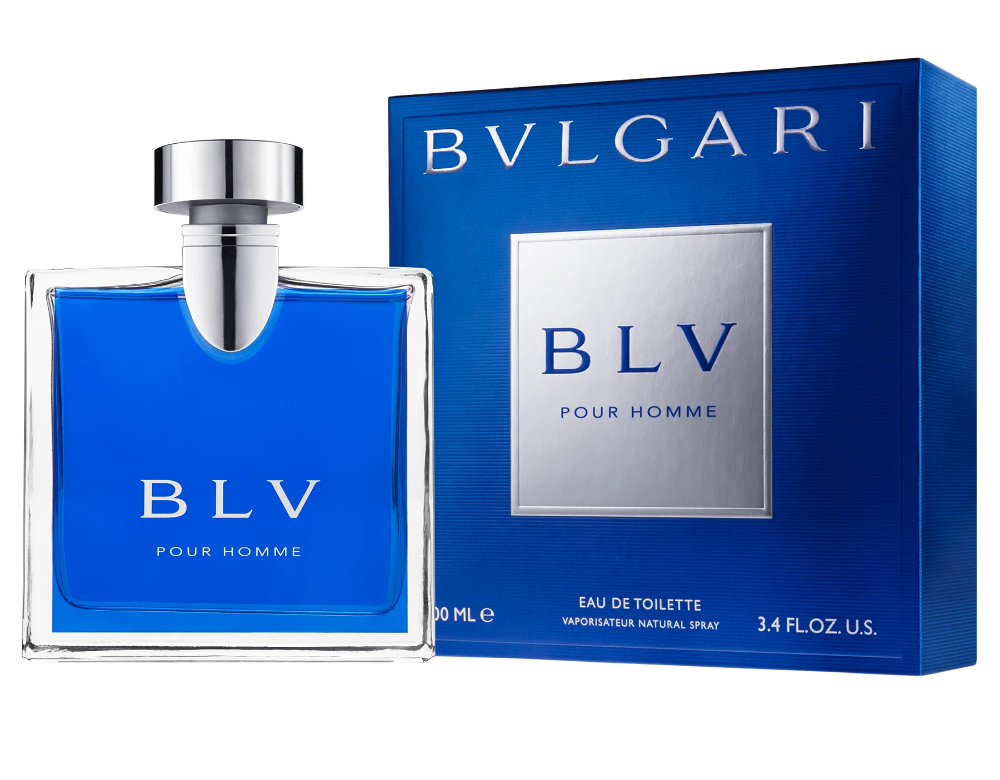

BVLGARI POUR HOMME
A scent of unexpected contrasts and surprising harmonies, a masculine and boldly seductive Eau de Toilette. From icy cold to luxuriously warm, BLV Pour Homme is a fresh, woody and spicy Eau de Toilette. A massive square bottle, framed with vibrant blue transparency.
First of all, there is a slight masculine smell of cold alcohol in the beginning. But it doesn't have a pungent or light scent. Rather, it feels soft and calm. It's like the smell of a man that's for sure. It's a scent that reminds me of the image of my church brother. It's a scent that I think the person I want to talk to will spray. Usually, the top notes of perfumes are not good, but this perfume feels good.
Over time, the unique smell of alcohol disappears. And the tenderness of the incense grows deeper. Comparing it to color, it's not a refreshing feeling of blue, but a manly scent that seems to be mixed with navy and gray. It's not disgusting even though it's a scent that keeps gender identity firmly male. Far from disgusting, I want to be grown-up, cozy and cuddly. Even though I've never worn this perfume, I feel like I've smelled it on the street.
*These contents were used on the website of each product.*